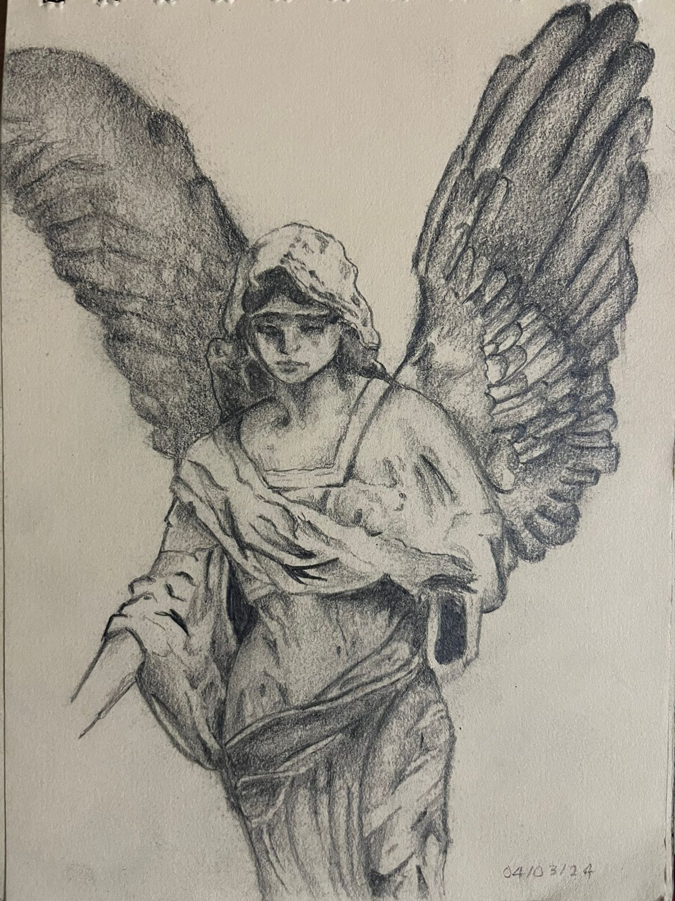
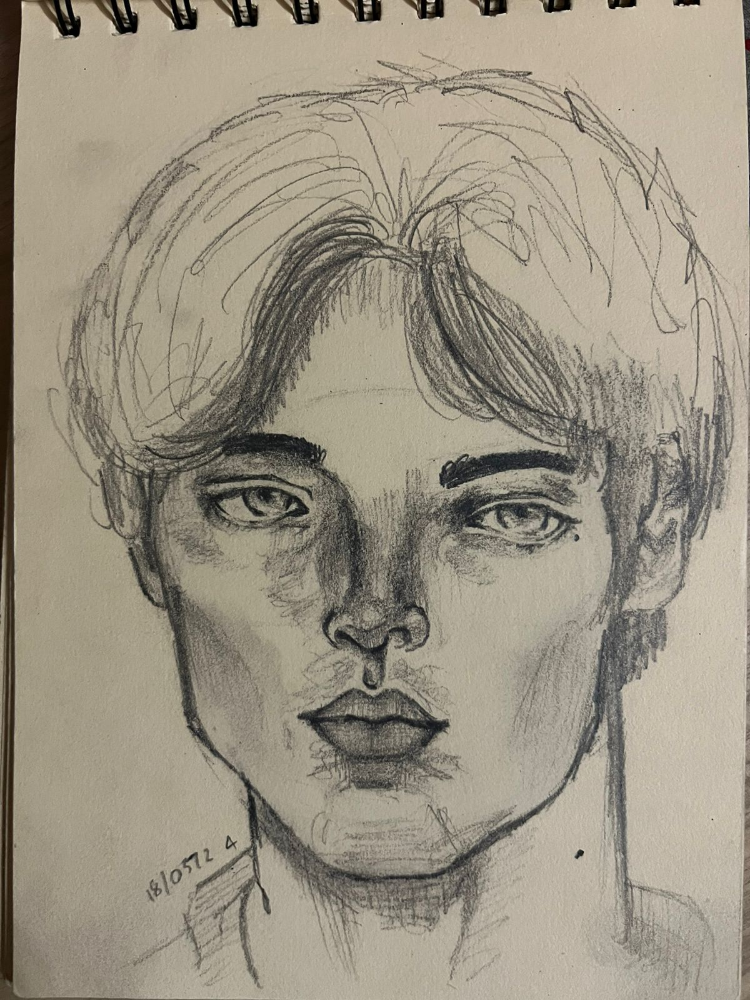
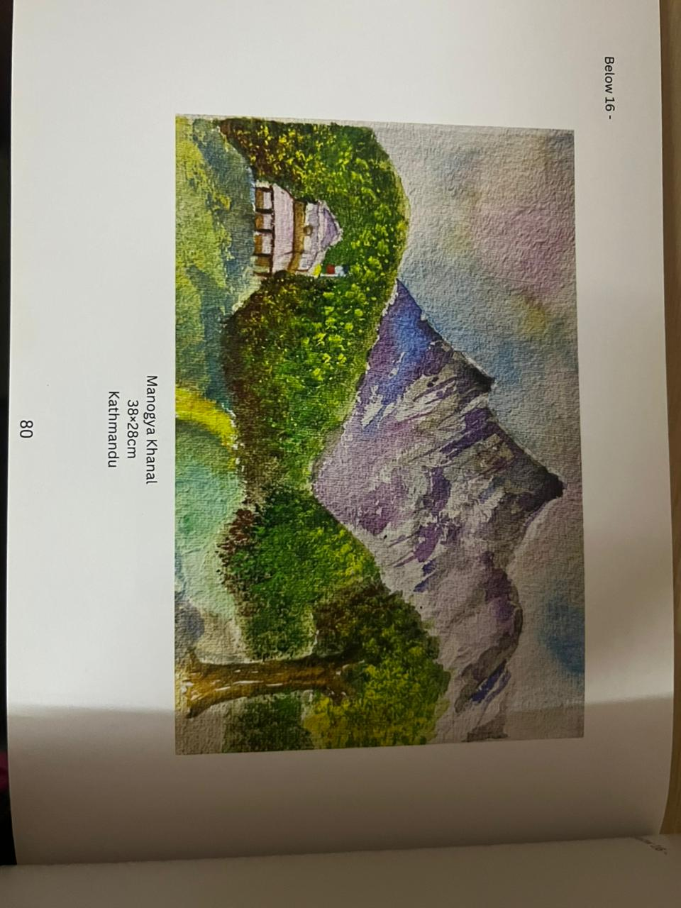
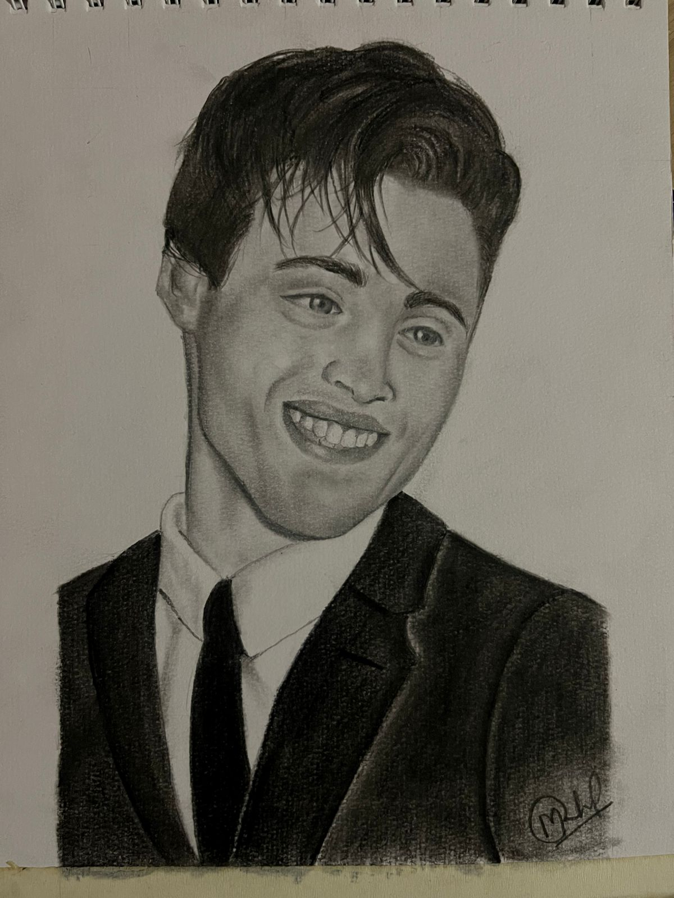

Most of these masterpieces were created while pretending to take notes. Warning: may contain traces of procrastination and mild daydreaming.
Click on the exhibited art pieces to learn more about them.